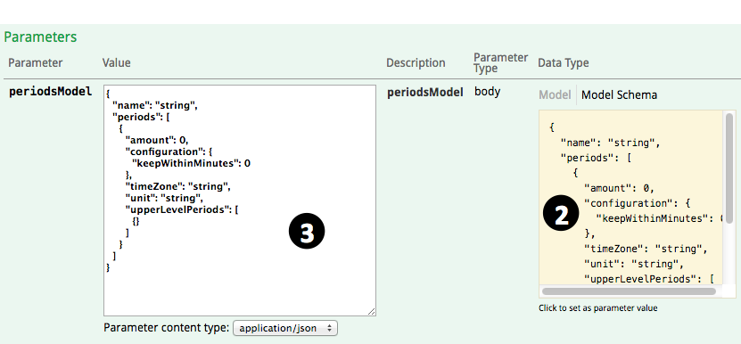
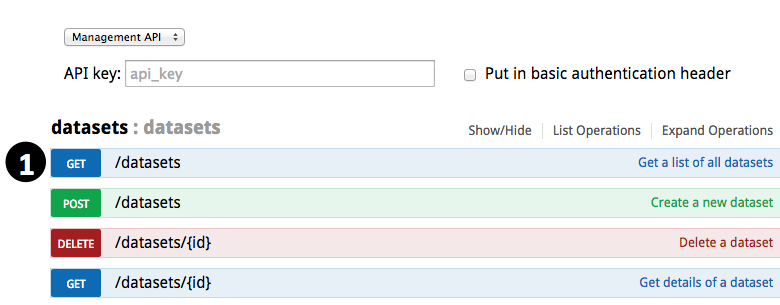
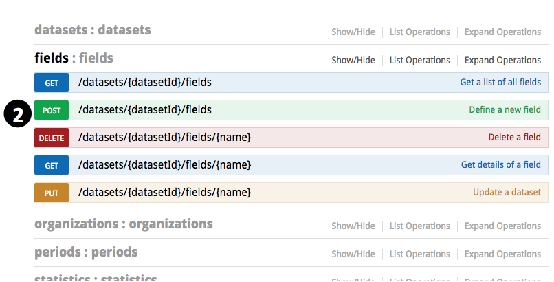
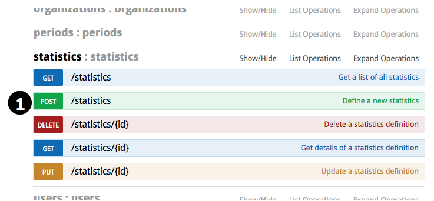
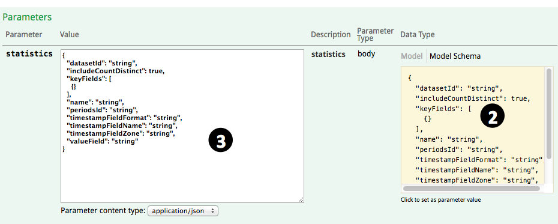
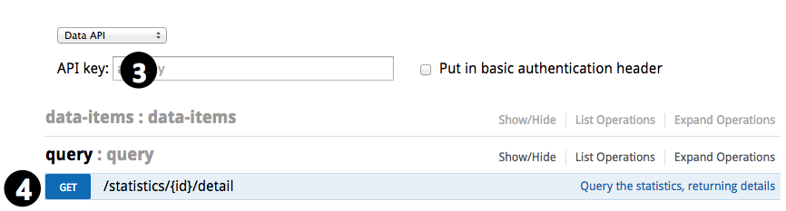
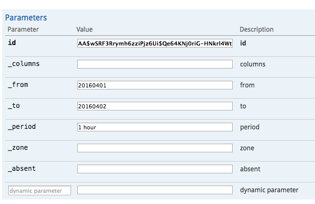

5分钟设置好实时统计
通过rtstatistics.com，你可以定义数据集，并把数据实时地发送到云端。具体过程可以参考《5分钟搞定发送数据到rtstatistics.com》。接下来，就可以为数据集定义统计了。
统计是基于数据集的。一个数据集可以拥有多项统计。一项统计其实就是基于某个数据集所定义的这些：
- 对什么对象进行统计 – 比如订单金额、短消息内容、节目观看次数等
- 统计哪些测度 – 比如对于订单金额，可以统计平均单笔金额、总金额、单笔最大金额、单笔最小金额这些信息；又比如对于短消息内容，可以获得互不相同的短信内容的条目数。
- 根据什么进行分类统计 – 比如根据店面编号分别统计；又比如根据发件人省份与收件人省份的组合分别进行统计；再比如不做细分只做一个笼统的统计。
- 按怎样的时间周期进行汇总 – 比如每5分钟汇总、每小时汇总、每天汇总等
一旦定义好了统计，就可以根据这些对统计结果进行查询：
- 类别 – 比如给定具体的店面编号；又比如给定收件人的具体省份与发件人的具体省份。
- 汇总周期 – 比如“每小时”
- 时间范围 – 比如起止时间
- 需要获得的统计结果 – 也就是总数、最大数等等的组合
rtstatistics.com所实现的统计是实时的，也就是说，假如在8点23分34秒有一笔金额为100的订单数据被送上来，在8点23分35秒对订单总金额统计进行查询的时候，就能发现总金额比之前增加了100。
设置一项统计大体上包括这几件事情：
- 定义统计汇总周期体系，或选择以前已经定义好的统计汇总周期体系
- 给数据集定义字段，或用以前已经定义好的字段
- 选择哪些字段以形成统计类别、哪个字段作为统计对象
第一步：定义汇总周期体系
之所以称之为汇总周期体系，是因为其中可以包含多个汇总周期。比如你可以把“每15分钟汇总”和“每1小时汇总”这两个周期定义在同一个汇总周期体系里，这样如果你同时需要每15分钟和每1小时汇总的统计，只需要定义一项引用这个汇总周期体系的统计，而不需要分别定义两项统计。
汇总周期体系并不为某项统计或某个数据集所独享，一旦你定义好了某个汇总周期体系，它可以被不同的统计项所引用，而且引用它的统计项可以基于不同的数据集。
- 登录进https://manage.rtstatistics.com/，进入管理API，展开“periods”，点击“POST /periods”

- 在下面找到右方的“Model Schema”，在它上面点击一下，其中的样例就会被拷贝到参数输入框里面

- 根据自己的需要修改其中的参数：
- name – 这个汇总周期体系的名字，比如“每小时”、“每15分钟以及每1小时”。
- periods – 这是一个数组，里面可以有多个汇总周期，每一个汇总周期又可以有如下参数：
- amount – 数量，比如1、15这样的数字。
- unit – 单位，比如“minute”，“hour”, “day”, “month”, “year”。必须是英文名，可以末尾带“s”也可以不带。
- timeZone – 时区，比如“UTC”、“Asia/Shanghai”、“Australia/Melbourne”。完整的时区列表可以再这里找到：支持的时区列表。在中国一般只需要用“Asia/Shanghai”就可以了（没有“Asia/Beijing”）。
- keepWithinMinutes – 汇总后的统计结果保存在系统中保留多久，比如43200代表保留30天，129600代表保留90天，1025280代表保留2年。
- upperLevelPeriods目前还不支持，可以整个删掉。删掉之后别忘了把前一个逗号“,”也删掉。或者只把upperLevelPeriods里的“{}”删掉也可以。
- 点击“Try it out!”按钮
- 向下滚动以查看服务器返回的结果。你将在返回结果中看到这个新的汇总周期体系的ID。把它复制下来，接下来的步骤中需要用到。
第二步：定义字段
这里所说的字段是供统计用的，有以下几种类型：
- 直接对应到原始数据里相应字段（native）
- 由原始数据通过公式得出的（calculated）
比如说基于这样的数据结构：
{"header":"this is a header", "body":{"content":"this is the content", "remark":"this is the remark"}, "size"=999, "sequence"=3}
可以定义出这些字段：
| 名称 | 类型 | 内容 | 值 |
|---|---|---|---|
| header | native | header | “this is a header” |
| size | native | size | 999 |
| content | native | body.content | “this is the content” |
| remark | native | body.remark | “this is the remark” |
| hasWordThisInContent | calculated | body.content.contains(“this”) | true |
| hasWordThatInContentOrRemark | calculated | body.content.contains(“that”) || body.remark.contains(“that”) | false |
| sizePlusSequence | calculated | size + sequence | 1002 |
- 找到数据集的ID。如果此前没有把它记下来的话，你可以直接查看所有的数据集列表。展开“datasets”，进入“GET /datasets”，点击“Try it out!”按钮，然后就可以在下面的返回结果中看到所有的数据集了。

- 展开“fields”，进入“POST /datasets/{datasetId}/fields”

- 输入数据集的ID

- 在下面找到右方的“Model Schema”，在它上面点击一下，其中的样例就会被拷贝到参数输入框里面
- 输入合适的参数以定义字段
- name – 就是这个字段的名字。字段名必须以英文字母开头，之后可以是英文字母或数字。
- path和formula – 两者只需要保留一个就行。对于native类型的字段，留下path；对于calculated类型的字段，留下formula。
- type – 可以是“native”或者“calculated”之一。也可以省略 – 具有path的就一定是native类型，具有formula的就一定是calculated类型。
- 如果是native类型的字段，而且path与其名称相同，则可以简化成这样：
{"name": "myFieldName"} - 如果是calculated类型的字段，由于type可以省略，所以可以是类似这样：
{"name": "myCalculatedField", "formular":"body.remark.contains(\"that\")"}
- 点击“Try it out!”按钮
- 向下滚动以查看服务器返回的结果。如果没有错误信息则表示这个字段创建成功。
- 可以重复以上过程以创建多个字段。你可以为常量创建calculated类型的字段，但是一般来说没有必要，因为在定义统计的时候可以直接把常量用作统计对象。
第三步：定义统计
定义统计之前你需要知道数据集的ID，统计周期体系的ID，以及作为统计对象和生成统计类别的那些字段的名字。
- 展开“statistics”，进入“POST /statistics”

- 在下面找到右方的“Model Schema”，在它上面点击一下，其中的样例就会被拷贝到参数输入框里面

- 输入合适的参数以定义这个统计：
- name – 这个统计的名字
- datasetId – 数据集的ID
- periodsId – 汇总周期体系的ID
- valueField – 作为统计对象的字段的名字。也可以直接在这里指定一个数值常量，比如“”1″”。
- includeCountDistinct – 可以是true或者false，表示是否需要统计互不相同的统计对象的个数。比如说有5条数据，其中的统计对象是firstName字段，而这5条数据的firstName字段的值分别是“Alice”、“Bob”、“Clark”、“Alice”、“Bob”，这种情况下互不相同的统计对象的个数是3。
- 不论includeCountDistinct是true还是false，只要统计对象字段的值是一个数字，系统都会对次数（count）、加总（summary）、最大（maximum）、最小（minimum）、平均（average）进行统计。
- 当includeCountDistinct是true的时候，除了统计互不相同的值的个数之外，如果统计对象字段的值是一个数字，系统仍然会进行上述统计。假如统计对象字段的值不是一个数字，则用数字1进行统计，也就是说仍旧可以得到次数（count）统计。
- keyFields – 如果不需要进行分类统计，则可以删掉这一项，或者删掉其中的“{}”使其值成为一个空的数组。如果需要进行分类统计，则可以在这里指定生成分类的字段名称。比如：
["shopId", "category"]表示根据shopId与category这两个字段的值的组合进行分类统计[["firstSalespersonId", "secondSalespersonId"], "category"]表示根据（firstSalespersonId或secondSalespersonId）与category这两个字段的值的组合进行分类统计，也就是说同一条订单的金额会被同时分别统计到两个销售员的头上。这样以来在查询的时候不论用哪个销售员的ID作为条件来查询，都可以得到体现了这笔订单的总金额。如果数据中firstSalespersonId与secondSalespersonId的值相同，则在这个销售员头上只记一笔，不会记两笔。
- timestampFieldName – 数据中代表时间戳的字段的名字。如果不指定的话，则采用数据被接收到的时间作为时间戳。统计数据的周期汇总就是根据这个时间戳的。
- timestampFieldFormat – 时间戳字段的格式。如果没有指定时间戳字段，则可以删掉这一项。它的取值可以是：
- 日期时间格式模版，比如”yyyyMMdd”、”yyyyMMdd:HHmm”，表示时间戳字段的值应该是一个字符串，而且可以用这里指定的格式来进行解析。关于日期时间模版的具体格式可以参考这里：日期与时间格式。
- “EPOCH_MILLIS”，表示时间戳字段的值应该是一个整数，代表自从1970年1月1日零点开始所经历的毫秒数
- “EPOCH_SECONDS”，表示时间戳字段的值应该是一个整数，代表自从1970年1月1日零点开始所经历的秒数
- timestampFieldZone – 时间戳字段的时区。如果没有指定时间戳字段，则可以删掉这一项。完整的时区列表可以再这里找到：支持的时区列表。在中国一般只需要用“Asia/Shanghai”就可以了（没有“Asia/Beijing”）。
- 点击“Try it out!”按钮
- 向下滚动以查看服务器返回的结果。你将在返回结果中看到这个新的统计的ID。把它复制下来，在查询统计结果的时候需要用到。
- 可以重复以上过程以创建多项统计。
第四步：查询统计结果
统计结果只有在统计定义被保存之后才会生成。在统计定义被保存之前系统所接收到的数据不会被重新处理。所以为了能查到有意义的统计结果，需要保证在定义好统计之后，有数据被接收到。
- 获得数据集的查询秘钥。具体过程可以参考《5分钟搞定发送数据到rtstatistics.com》中的“第三步：得到数据集的API秘钥”。
- 打开https://api.rtstatistics.com/
- 把查询秘钥作为API key

- 展开“query”，进入“GET /statistics/{id}/detail”
- 输入查询条件：
- id – 统计项的ID
- _columns – 指定需要得到哪些统计结果。可以不指定或者用“all”，表示需要所有的统计结果。可以是这些的组合（用逗号或空格分隔）：
- count – 计数
- sum – 加总
- avg – 平均
- min – 最小值
- max – 最大值
- unique – 互不相同的值的个数
- estimated – 互不相同的值的个数是精确的还是估算的。一般来说当数量比较小的时候是精确的，数量多了之后就是估算的。
- values – 如果互不相同的值的个数是精确的，则返回那些具体的取值。
- _from – 开始时间，”yyyyMMddHHmm”或”yyyyMMddHH”或”yyyyMMdd”或”yyyyMM”格式，表示需要返回正好在这个时间以及在这个时间之后的数据的统计
- _to – 结束时间，”yyyyMMddHHmm”或”yyyyMMddHH”或”yyyyMMdd”或”yyyyMM”格式，表示需要返回在这个时间之前的数据的统计
- _period – 汇总周期。比如“1 hour”、“5 minutes”、“10 hour”。单位末尾可以带“s”也可以不带。如果该统计所引用的汇总周期体系里只有一个汇总周期则可以省略。
- _zone – 汇总周期的时区。如果该统计所引用的汇总周期体系里没有用到多于一个的时区则可以省略。
- _absent – 可以是“empty”或省略。如果是“empty”则表示没有指定的统计分类参数按空字符串取值，否则的话表示没有指定的统计分类参数按null取值。
- dynamic parameters – 统计分类参数。对应到定义统计时候所选择的keyFields中的那些字段。例如，keyFields如果定义为
["shopId", "category"]，则这里可以添加两个参数，分别是shopId和category，取值分别为100和shoes，从而查询出来的结果就是针对shopId为100以及category为shoes的组合的条件下的统计。
完成！
现在你已经成功地创建了统计，并且查询到了统计结果，是不是很简单？
如有任何的意见或者问题，欢迎发送邮件至：support@rtstatistics.com.